fastica_with_noise
junmingguan
2026-05-07
Last updated: 2026-05-13
Checks: 7 0
Knit directory: misc/
This reproducible R Markdown analysis was created with workflowr (version 1.7.2). The Checks tab describes the reproducibility checks that were applied when the results were created. The Past versions tab lists the development history.
Great! Since the R Markdown file has been committed to the Git repository, you know the exact version of the code that produced these results.
Great job! The global environment was empty. Objects defined in the global environment can affect the analysis in your R Markdown file in unknown ways. For reproduciblity it’s best to always run the code in an empty environment.
The command set.seed(20251108) was run prior to running
the code in the R Markdown file. Setting a seed ensures that any results
that rely on randomness, e.g. subsampling or permutations, are
reproducible.
Great job! Recording the operating system, R version, and package versions is critical for reproducibility.
Nice! There were no cached chunks for this analysis, so you can be confident that you successfully produced the results during this run.
Great job! Using relative paths to the files within your workflowr project makes it easier to run your code on other machines.
Great! You are using Git for version control. Tracking code development and connecting the code version to the results is critical for reproducibility.
The results in this page were generated with repository version f5f43f7. See the Past versions tab to see a history of the changes made to the R Markdown and HTML files.
Note that you need to be careful to ensure that all relevant files for
the analysis have been committed to Git prior to generating the results
(you can use wflow_publish or
wflow_git_commit). workflowr only checks the R Markdown
file, but you know if there are other scripts or data files that it
depends on. Below is the status of the Git repository when the results
were generated:
Ignored files:
Ignored: .DS_Store
Ignored: .Rhistory
Ignored: .Rproj.user/
Ignored: analysis/presentation.html
Untracked files:
Untracked: analysis/eb_ica_backup.Rmd
Untracked: analysis/ebica_math.md
Untracked: analysis/ica_vs_flash_r1_rad copy.Rmd
Untracked: analysis/ica_vs_flash_r1_rad.Rmd
Untracked: analysis/ica_vs_flash_r1_update_2.Rmd
Untracked: analysis/index_bacup.Rmd
Untracked: analysis/preemble.tex
Untracked: analysis/presentation.qmd
Untracked: analysis/presentation_files/
Untracked: analysis/references.bib
Untracked: code/references.bib
Unstaged changes:
Modified: analysis/eb_ica.Rmd
Modified: analysis/ica_vs_flash_r1_update_1.Rmd
Modified: analysis/ica_vs_flashier_r1_rad.Rmd
Note that any generated files, e.g. HTML, png, CSS, etc., are not included in this status report because it is ok for generated content to have uncommitted changes.
These are the previous versions of the repository in which changes were
made to the R Markdown (analysis/ica_with_noise.Rmd) and
HTML (docs/ica_with_noise.html) files. If you’ve configured
a remote Git repository (see ?wflow_git_remote), click on
the hyperlinks in the table below to view the files as they were in that
past version.
| File | Version | Author | Date | Message |
|---|---|---|---|---|
| Rmd | f5f43f7 | junmingguan | 2026-05-13 | wflow_publish(c("analysis/index.Rmd", "analysis/ica_with_noise.Rmd")) |
| html | 88dccc2 | junmingguan | 2026-05-13 | Build site. |
| Rmd | 044f50b | junmingguan | 2026-05-13 | wflow_publish(c("analysis/index.Rmd", "analysis/ica_with_noise.Rmd")) |
Introduction
Here we adopted the 9 overlapping groups simulation considered in here.
The takeaway from there is, rank-1 fastICA does not perform well if the
data is not whitened (denoised) enough. Instead of generating \(L\) from Bernoulli, we consider asymmetric
Rademacher, so that ebnm_rademacher sets the correct
prior.
Summary
- For extracting non-Gaussian sources, the whitening step seems to matter more than the G2 term in the FastICA update.
- This suggests that whitening can be helpful only when the effective rank is chosen reasonably well: if the rank is too low or too high, whitening may either discard signal or amplify noise. In such cases, it may be preferable to avoid whitening or to use a model-based alternative.
- Fitting a higher-rank model with parallel update may help recover one true source when the true rank is high, since it gives the algorithm more flexibility to separate the target source from the remaining structured variation.
Things to investigate further
- Understand the tiny differences in the FastICA objectives
- (Theoretically?) understand why parallel rank-\(K_0\) updates (with Rademacher priors) allow exact extraction of one true source
Note
- deflation scheme without whitening: paper
- Symmetric orthogonalization without whitening: paper
- some theory: paper
- Some remarks on noisy ICA: Chapter 15
library(flashier)
library(Matrix)
library(fastICA)
library(ebnm)
source('code/ebcd_functions.R')
source('code/ica_functions.R')
source('code/ebnm_rademacher.R')
source('code/ebnm_point_rademacher.R')K=9
p = 1000
n = 100
set.seed(1)
L = matrix(-1,nrow=n,ncol=K)
for(i in 1:K){L[sample(1:n,20),i]=1}
FF = matrix(rnorm(p*K), nrow = p, ncol=K)
X = L %*% t(FF) + rnorm(n*p,0,0.01)
plot(X %*% FF[,1])
| Version | Author | Date |
|---|---|---|
| 88dccc2 | junmingguan | 2026-05-13 |
X1 = preprocess(X,n.comp=20)
X1 = rbind(rep(1,ncol(X1)), X1)flash_x_rademacher <- function(X, w, ebnm_fn = ebnm_rademacher) {
if (is.vector(w)) w <- matrix(w, ncol = 1)
l_init = X %*% w
f_init = t(solve(crossprod(l_init), crossprod(l_init, X)))
flash_init(X) |>
flash_factors_init(
init = list(l_init, f_init),
ebnm_fn = list(ebnm_fn, ebnm_normal)
) |>
flash_backfit(verbose = 0)
}Rank-1 fit
I tried non-centered rank-1 fastICA, with and without the G2 term. Both struggle to find one of the true sources.
cor_with_L_G2 <- c()
cor_with_PC_G2 <- c()
cor_with_L_no_G2 <- c()
cor_with_PC_no_G2 <- c()
for (i in 1:100) {
set.seed(i)
init_w = rnorm(dim(X1)[1]) # X1 %*% L[,1]
w <- fastica_rank_one_update(X1, init_w, include_G2 = FALSE)
cor_with_L_G2[i] = max(abs(cor(L, t(X1) %*% w)))
cor_with_PC_G2[i] = abs(cor(t(X1) %*% w, svd(X1)$v[,1]))
w <- fastica_rank_one_update(X1, init_w, include_G2 = TRUE)
cor_with_L_no_G2[i] = max(abs(cor(L, t(X1) %*% w)))
cor_with_PC_no_G2[i] = abs(cor(t(X1) %*% w, svd(X1)$v[,1]))
}
sum(cor_with_L_G2 > 0.9)[1] 16sum(cor_with_L_no_G2 > 0.9)[1] 17# correlation with first PC
max(cor_with_PC_G2)[1] 0.4993287# correlation with first PC
max(cor_with_PC_no_G2)[1] 0.4778801Matthew tried applying rank-1 FastICA without the G2 term, i.e. EBCD, directly to the original data, and found that it simply recovers the first PC. Including the G2 term does not seem to help either. This suggests that, at least in this setting, the G2 term may mainly affect convergence rather than the direction being targeted, while proper whitening plays a more important role in enabling recovery of non-Gaussian sources.
X2 = t(scale(X,center=FALSE))
# svd.X = svd(X)
# X2 = t(svd.X$u[,1:10] %*% t(svd.X$v[,1:10]))
set.seed(100)
w = rnorm(nrow(X2))
for(i in 1:100)
w = fastica_rank_one_update(X2,w,include_G2=TRUE)
cor(L,t(X2) %*% w) [,1]
[1,] 0.3691843
[2,] 0.3539475
[3,] 0.3800907
[4,] 0.3837124
[5,] 0.2699964
[6,] 0.3725444
[7,] 0.3816918
[8,] 0.3128227
[9,] 0.1301153plot(t(X2) %*% w)
| Version | Author | Date |
|---|---|---|
| 88dccc2 | junmingguan | 2026-05-13 |
plot(svd(X2)$u[,1],w)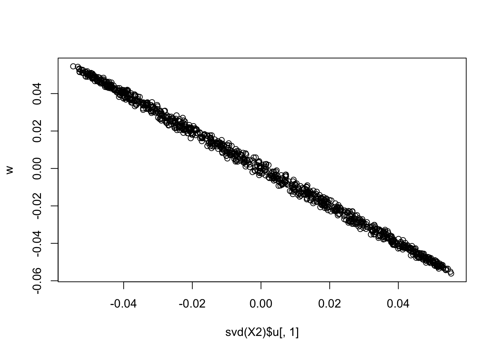
| Version | Author | Date |
|---|---|---|
| 88dccc2 | junmingguan | 2026-05-13 |
I tried rank-1 flashierRad and EBICA with 100 random initilization. As expected, all of them converge to the same solution corresponding to the first PC.
cor_list <- c()
for (i in 1:100) {
set.seed(i)
init_w = rnorm(dim(X)[2]) # w is p by K here K = 1
flash_res = flash_x_rademacher(X, w = init_w, ebnm_fn = ebnm_rademacher)
cor_list[i] <- max(abs(cor(L, flash_res$L_pm)))
}
sum(cor_list > 0.9)[1] 0plot(svd(X)$u[,1], X %*% flash_res$F_pm)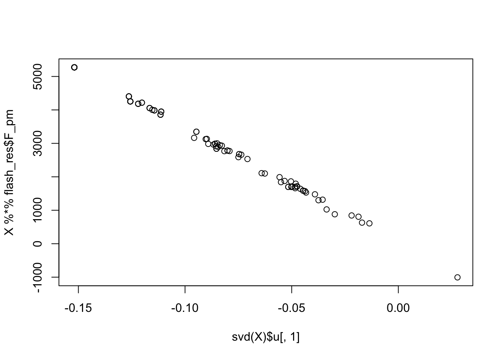
| Version | Author | Date |
|---|---|---|
| 88dccc2 | junmingguan | 2026-05-13 |
cor_list <- c()
for (i in 1:100) {
set.seed(i)
res = ebica(t(X), K = 1, symmetric_rademacher = TRUE)
cor_list[i] <- max(abs(cor(L, res$S)))
}
sum(cor_list > 0.9)[1] 0plot(svd(X)$u[,1], res$S)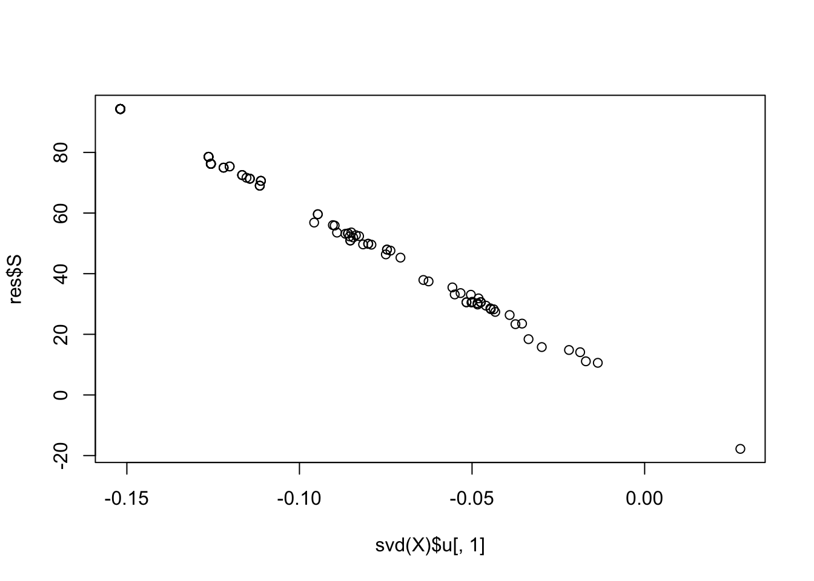
| Version | Author | Date |
|---|---|---|
| 88dccc2 | junmingguan | 2026-05-13 |
Higher-rank fit
Next, I tried fitting rank-3 FastICA with symmetric orthogonalization (instead of the deflation scheme). The idea was that, by fitting multiple components, some components could absorb the noise and residual structured variation, thereby making it easier for another component to align with one true source. Empirically, this appears to be more successful at recovering one true source than the rank-1 approach.
X1 = preprocess(X,n.comp=20)
X1 = rbind(rep(1,ncol(X1)), X1)
K0 = 3
cor_list_G2 <- rep(0, 100)
cor_list_no_G2 <- rep(0, 100)
# cor_list_G2_fastICA <- rep(0, 100)
for (i in 1:100) {
set.seed(i)
init_W = matrix(rnorm(dim(X1)[1] * K0), ncol = K0) # X1 %*% L[,1]
W <- fastica_rank_K_update(X1, init_W, include_G2 = FALSE)
cor_list_no_G2[i] = max(abs(cor(L, t(X1) %*% W)))
W <- fastica_rank_K_update(X1, init_W, include_G2 = TRUE)
# cor(L,ebnm_rademacher(t(X1) %*% w, s=0.01)$posterior$mean)
cor_list_G2[i] <- max(abs(cor(L, t(X1) %*% W)))
# cor_list_G2_fastICA[i] = max(abs(cor(L, fastICA(X, K0, 'parallel')$S)))
}
sum(cor_list_no_G2 > 0.9) / 100[1] 0.35sum(cor_list_G2 > 0.9) / 100[1] 0.42As expected, restricting the analysis to the subspace spanned by the top 9 eigenvectors improves performance.
X1 = preprocess(X,n.comp=9)
X1 = rbind(rep(1,ncol(X1)), X1)
K0 = 3
cor_list_G2 <- rep(0, 100)
cor_list_no_G2 <- rep(0, 100)
# cor_list_G2_fastICA <- rep(0, 100)
for (i in 1:100) {
set.seed(i)
init_W = matrix(rnorm(dim(X1)[1] * K0), ncol = K0) # X1 %*% L[,1]
W <- fastica_rank_K_update(X1, init_W, include_G2 = FALSE)
cor_list_no_G2[i] = max(abs(cor(L, t(X1) %*% W)))
W <- fastica_rank_K_update(X1, init_W, include_G2 = TRUE)
# cor(L,ebnm_rademacher(t(X1) %*% w, s=0.01)$posterior$mean)
cor_list_G2[i] <- max(abs(cor(L, t(X1) %*% W)))
# cor_list_G2_fastICA[i] = max(abs(cor(L, fastICA(X, K0, 'parallel')$S)))
}
sum(cor_list_no_G2 > 0.9) / 100[1] 0.95sum(cor_list_G2 > 0.9) / 100[1] 0.98Surprisingly, when applied directly to the original data, a rank-3 fit almost always recovers one of the true sources, and performs much better than when applied to whitened or denoised data.
X2 = t(scale(X,center=FALSE))
K0 = 3
# svd.X = svd(X)
# X2 = t(svd.X$u[,1:10] %*% t(svd.X$v[,1:10]))
cor_list_G2 <- rep(0, 100)
cor_list_no_G2 <- rep(0, 100)
for (i in 1:100) {
set.seed(i)
init_W = matrix(rnorm(dim(X2)[1] * K0), ncol = K0) # X1 %*% L[,1]
W <- fastica_rank_K_update(X2, init_W, include_G2 = FALSE)
cor_list_no_G2[i] = max(abs(cor(L, t(X2) %*% W)))
W <- fastica_rank_K_update(X2, init_W, include_G2 = TRUE)
cor_list_G2[i] <- max(abs(cor(L, t(X2) %*% W)))
}
sum(cor_list_no_G2 > 0.9) / 100[1] 0.99sum(cor_list_G2 > 0.9) / 100[1] 0.99Examining the one case where it fails:
seed = which(cor_list_no_G2 < 0.9)
cor_list_no_G2[seed][1] 0.7503576set.seed(2)
init_W = matrix(rnorm(dim(X2)[1] * K0), ncol = K0) # X1 %*% L[,1]
W <- fastica_rank_K_update(X2, init_W, include_G2 = TRUE, n_iter = 1000)
plot(t(X2) %*% W)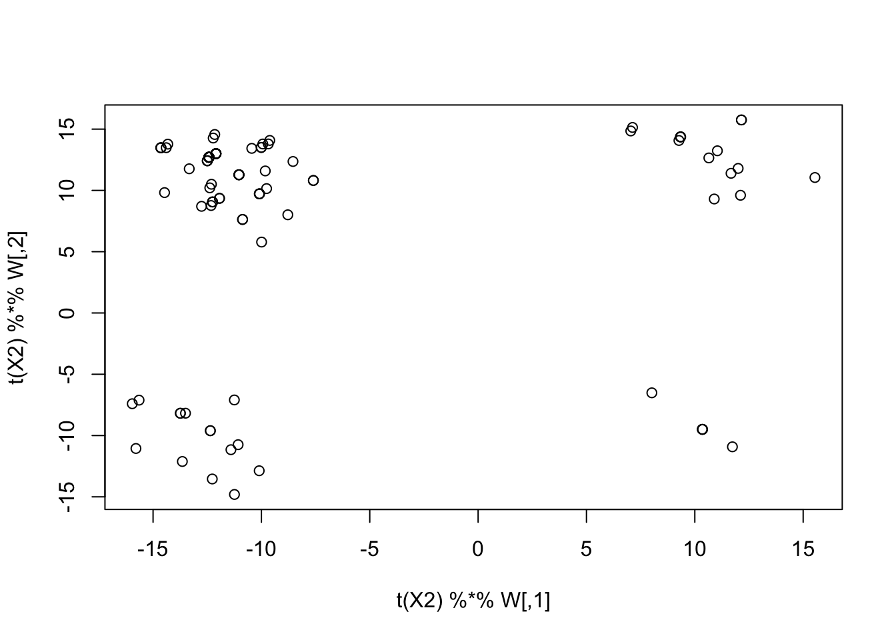
| Version | Author | Date |
|---|---|---|
| 88dccc2 | junmingguan | 2026-05-13 |
compute_objective_s(scale(t(X2) %*% W, center = FALSE))[1] 0.4175796Now we run EBICA, and it extracts one of the true sources with all 100 random initialization.
cor_list = c()
for (i in 1:100) {
set.seed(i)
res = ebica(t(X), K = 3, symmetric_rademacher = TRUE)
# cor(L, res$S_plus)
cor_list[i] = max(abs(cor(L, res$S)))
}
sum(cor_list > 0.9)[1] 100Examining the first seed: the first extracted source corresponds to the first PC, while the second and third recover one of the true sources.
set.seed(i)
res = ebica(t(X), K = 3, symmetric_rademacher = TRUE)
cor(L, res$S) [,1] [,2] [,3]
[1,] -0.28841649 -0.08327265 0.130200193
[2,] 0.12193576 0.02395989 0.963472618
[3,] -0.60089641 -0.05197261 -0.026742095
[4,] 0.09327325 -0.96290146 -0.037504695
[5,] -0.26219284 0.06781176 0.195654871
[6,] -0.06956752 -0.15832861 0.238766171
[7,] -0.54375245 -0.12664618 -0.075639636
[8,] -0.62731414 0.19957134 -0.004075457
[9,] 0.10964312 -0.26242903 -0.029122899compute_objective_s(scale(t(X) %*% res$S[,1]))[1] 0.3712458plot(svd(X)$v[,1], t(X) %*% res$S[,1])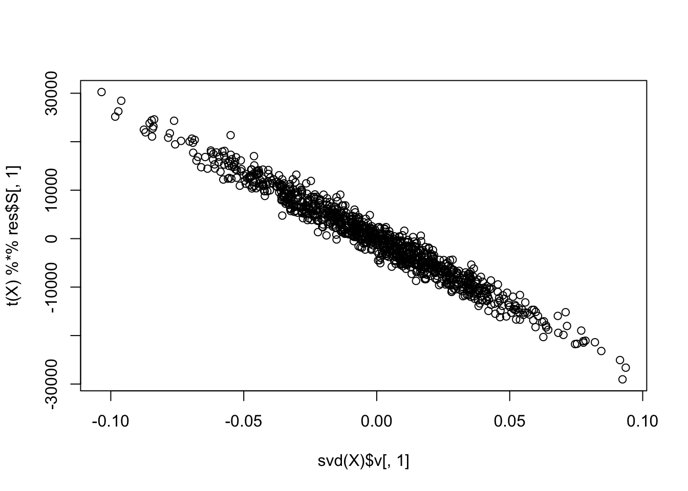
| Version | Author | Date |
|---|---|---|
| 88dccc2 | junmingguan | 2026-05-13 |
We also tried rank-3 EBCD and successfully extracted one true source. The second extracted source is near Gaussian and is highly correlated with the first PC.
res = ebcd(t(X), Kmax = 3, ebnm_fn = ebnm_rademacher)
cor(L, res$EL) [,1] [,2] [,3]
[1,] 8.333333e-02 -0.10407264 5.724587e-17
[2,] -8.333333e-02 -0.02973501 1.000000e+00
[3,] 8.557969e-17 -0.62443613 -1.734723e-17
[4,] 5.000000e-01 0.04460257 -2.341877e-17
[5,] 1.666667e-01 -0.10407264 6.250000e-02
[6,] 8.333333e-02 0.11894020 6.250000e-02
[7,] 3.333333e-01 -0.40142323 -6.250000e-02
[8,] -1.666667e-01 -0.47576081 1.214306e-16
[9,] 4.166667e-01 0.19327784 -6.250000e-02compute_objective_s(scale(t(X) %*% res$Z[,2]))[1] 0.3718188plot(t(X) %*% res$Z[,2])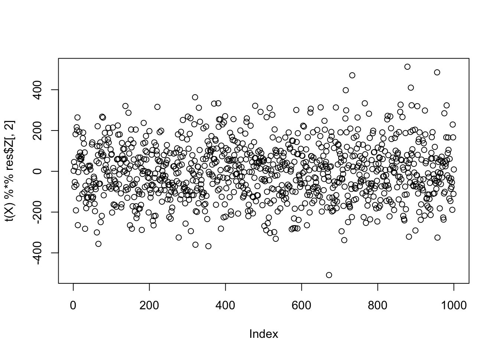
| Version | Author | Date |
|---|---|---|
| 88dccc2 | junmingguan | 2026-05-13 |
plot(svd(X)$v[,1], t(X) %*% res$Z[,2])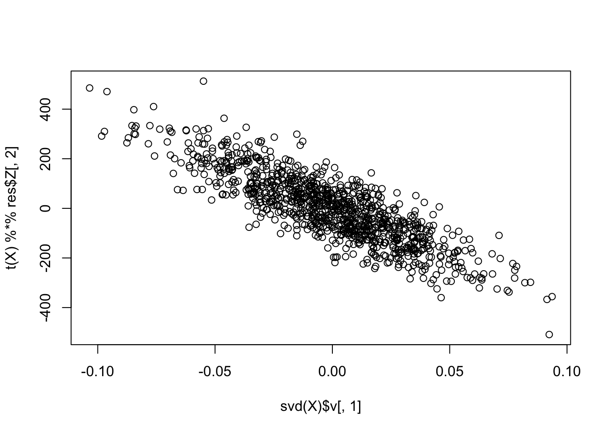
| Version | Author | Date |
|---|---|---|
| 88dccc2 | junmingguan | 2026-05-13 |
compute_objective_s(scale(t(X) %*% res$Z[,1]))[1] 0.3719597plot(t(X) %*% res$Z[,1])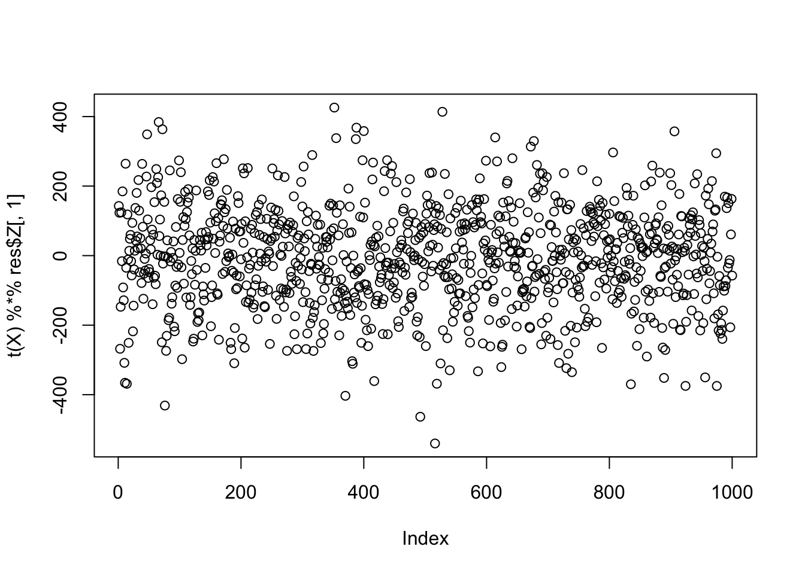
| Version | Author | Date |
|---|---|---|
| 88dccc2 | junmingguan | 2026-05-13 |
plot(svd(X)$v[,2], t(X) %*% res$Z[,2])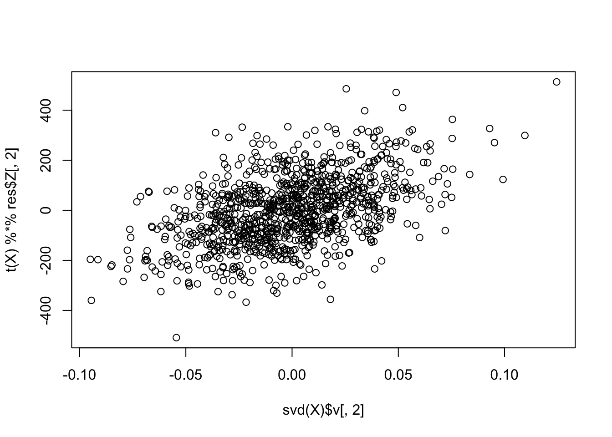
| Version | Author | Date |
|---|---|---|
| 88dccc2 | junmingguan | 2026-05-13 |
Rank-3 flashierRad with random initialization sometimes fails to recover a true source, potentially because it does not impose an orthogonality constraint.
cor_list <- c()
for (i in 1:100) {
set.seed(i)
init_w = matrix(rnorm(dim(X)[2] * 3), ncol = 3) # w is p by K here K = 3
flash_res = flash_x_rademacher(X, w = init_w, ebnm_fn = ebnm_rademacher)
cor_list[i] <- max(abs(cor(L, flash_res$L_pm)))
}
sum(cor_list > 0.9)[1] 44plot(svd(X)$u[,1], X %*% flash_res$F_pm[,1])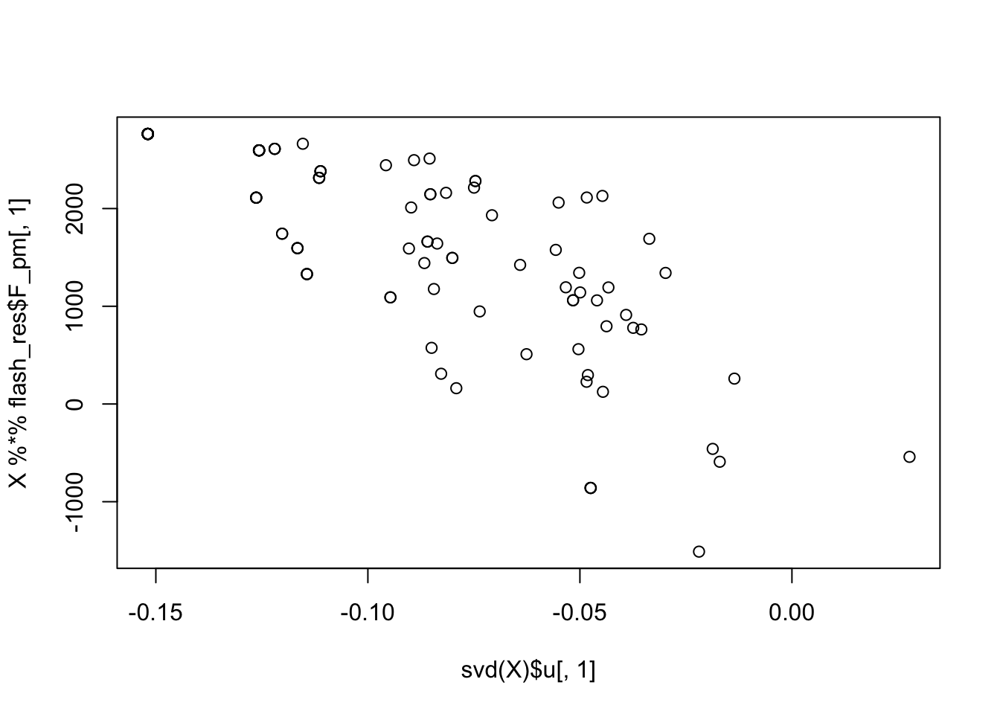
| Version | Author | Date |
|---|---|---|
| 88dccc2 | junmingguan | 2026-05-13 |
Rank-3 fit with different priors
Perhaps we can specify one additional non-Rademacher factor to capture noise, and one additional Rademacher (or point Rademacher) factor to capture the remaining true non-Gaussian sources?
Some initial exploration:
l_init_1 = matrix(rnorm(dim(X)[1] * 1), ncol = 1)
f_init_1 = t(solve(crossprod(l_init_1), crossprod(l_init_1, X)))
l_init_2 = matrix(rnorm(dim(X)[1] * 1), ncol = 1)
f_init_2 = t(solve(crossprod(l_init_2), crossprod(l_init_2, X)))
l_init_3 = matrix(rnorm(dim(X)[1] * 1), ncol = 1)
f_init_3 = t(solve(crossprod(l_init_3), crossprod(l_init_3, X)))
fl <- flash_init(X, var_type = 0) |>
flash_factors_init(
init = list(l_init_1, f_init_1),
ebnm_fn = list(ebnm_point_laplace, ebnm_normal)
) |>
flash_factors_init(
init = list(l_init_2, f_init_2),
ebnm_fn = list(ebnm_point_rademacher, ebnm_normal)
) |>
flash_factors_init(
init = list(l_init_3, f_init_3),
ebnm_fn = list(ebnm_rademacher, ebnm_normal)
) |>
flash_backfit()Backfitting 3 factors (tolerance: 1.49e-03)...
Difference between iterations is within 1.0e+03...
Difference between iterations is within 1.0e+02...
Difference between iterations is within 1.0e+01...
Difference between iterations is within 1.0e+00...
Difference between iterations is within 1.0e-01...
Difference between iterations is within 1.0e-02...
Difference between iterations is within 1.0e-03...
Wrapping up...
Done.cor(L, fl$L_pm) [,1] [,2] [,3]
[1,] 0.47599561 -0.06757374 -0.0625
[2,] -0.07232082 -0.81088485 -0.0625
[3,] 0.30810801 0.10136061 0.1875
[4,] 0.51717884 0.16893434 0.0625
[5,] -0.05563884 -0.40544243 0.0625
[6,] 0.26415964 -0.27029495 -0.0625
[7,] -0.27671986 0.03378687 1.0000
[8,] 0.27489577 -0.03378687 0.0625
[9,] 0.30510617 0.13514748 -0.0625ebica_parallel1 <- function(
X, ebnm_fns, ebnm_fn = ebnm_rademacher,
max_iter = 1000, tol = 1e-6, s = NULL,
S_init = NULL, W_init = NULL,
conv_crit = "elbo", verbose = 0) {
ebica_generalized_parallel(
X = X,
K = length(ebnm_fns) + 1,
ebnm_fn = c(unlist(ebnm_fns), ebnm_fn),
max_iter = max_iter,
tol = tol,
s = s,
S_init = S_init,
W_init = W_init,
conv_crit = conv_crit,
verbose = verbose
)
}
res = ebica_parallel1(t(X), ebnm_fns = c(ebnm_point_laplace, ebnm_point_rademacher))
cor(L,res$S) [,1] [,2] [,3]
[1,] -0.3653362 -0.2330746 0.6206392
[2,] -0.3905970 0.1657538 0.3507482
[3,] -0.4050064 0.6248399 -0.3120996
[4,] -0.3784956 -0.2884205 -0.2669501
[5,] -0.2832079 0.1962121 0.4513960
[6,] -0.2955334 -0.1657489 -0.2738048
[7,] -0.4037851 0.3651846 -0.3490339
[8,] -0.3411918 0.3439790 0.0900015
[9,] -0.0811607 -0.7238564 -0.2878268Denoising using flashier followed by fastICA
fit_init <- flash(X, ebnm_fn = ebnm_point_normal, greedy_Kmax = 30, backfit = T)Adding factor 1 to flash object...
Adding factor 2 to flash object...
Adding factor 3 to flash object...
Adding factor 4 to flash object...
Adding factor 5 to flash object...
Adding factor 6 to flash object...
Adding factor 7 to flash object...
Adding factor 8 to flash object...
Adding factor 9 to flash object...
Adding factor 10 to flash object...
Factor doesn't significantly increase objective and won't be added.
Wrapping up...
Done.
Backfitting 9 factors (tolerance: 1.49e-03)...
Difference between iterations is within 1.0e+05...
Difference between iterations is within 1.0e+04...
Difference between iterations is within 1.0e+03...
Difference between iterations is within 1.0e+02...
Difference between iterations is within 1.0e+01...
Difference between iterations is within 1.0e+00...
Difference between iterations is within 1.0e-01...
Difference between iterations is within 1.0e-02...
Difference between iterations is within 1.0e-03...
Wrapping up...
Done.
Nullchecking 9 factors...
Done.X2 = t(scale(fit_init$L_pm %*% t(fit_init$F_pm),center=FALSE))
# svd.X = svd(fit_init$L_pm %*% t(fit_init$F_pm))
# X2 = t(svd.X$u[,1:10] %*% t(svd.X$v[,1:10]))
set.seed(2)
w = rnorm(nrow(X2))
for(i in 1:100)
w = fastica_rank_one_update(X2,w,include_G2=TRUE)
cor(L,t(X2) %*% w) [,1]
[1,] 0.3691770
[2,] 0.3539477
[3,] 0.3800873
[4,] 0.3837125
[5,] 0.2700003
[6,] 0.3725415
[7,] 0.3816924
[8,] 0.3128346
[9,] 0.1301166plot(t(X2) %*% w)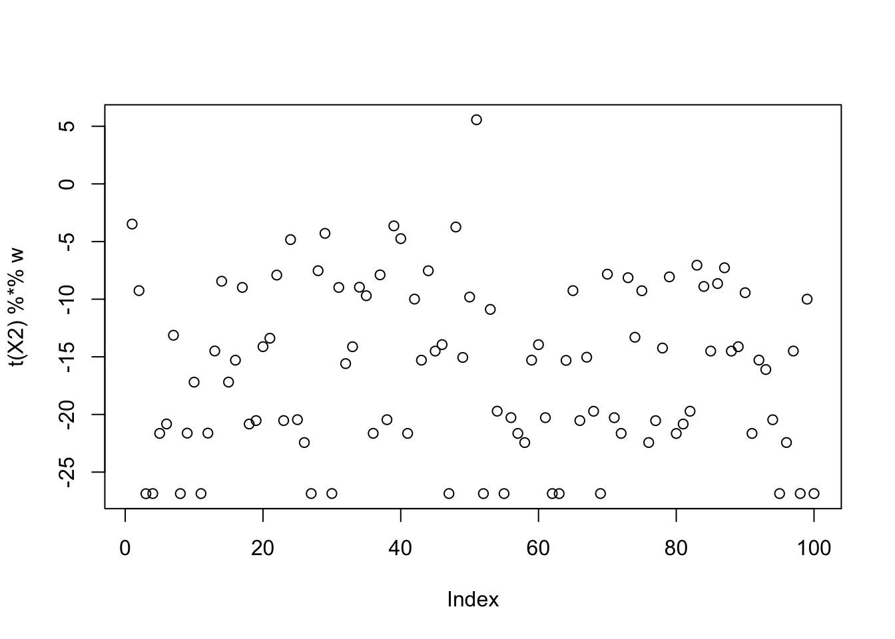
| Version | Author | Date |
|---|---|---|
| 88dccc2 | junmingguan | 2026-05-13 |
plot(svd(X2)$u[,1],w)
| Version | Author | Date |
|---|---|---|
| 88dccc2 | junmingguan | 2026-05-13 |
Misc
Vectorized experiments:
obj = rep(0,100)
W = sapply(1:100, function(seed) {
set.seed(seed)
rnorm(nrow(X1))
})
W = sweep(W, 2, sqrt(colSums(W^2)), "/")
for(i in 1:100) {
P = t(X1) %*% W
G = tanh(P)
G2 = 1 - tanh(P)^2
W = X1 %*% G - sweep(W, 2, colSums(G2), "*")
W = sweep(W, 2, sqrt(colSums(W^2)), "/")
}
obj = colMeans(log(cosh(t(X1) %*% W)))
plot(obj)
sessionInfo()R version 4.3.1 (2023-06-16)
Platform: aarch64-apple-darwin20 (64-bit)
Running under: macOS 26.2
Matrix products: default
BLAS: /Library/Frameworks/R.framework/Versions/4.3-arm64/Resources/lib/libRblas.0.dylib
LAPACK: /Library/Frameworks/R.framework/Versions/4.3-arm64/Resources/lib/libRlapack.dylib; LAPACK version 3.11.0
locale:
[1] en_US.UTF-8/en_US.UTF-8/en_US.UTF-8/C/en_US.UTF-8/en_US.UTF-8
time zone: America/Chicago
tzcode source: internal
attached base packages:
[1] stats graphics grDevices utils datasets methods base
other attached packages:
[1] fastICA_1.2-7 Matrix_1.6-4 flashier_1.0.59 ebnm_1.1-42
[5] workflowr_1.7.2
loaded via a namespace (and not attached):
[1] tidyselect_1.2.1 viridisLite_0.4.3 dplyr_1.1.4
[4] farver_2.1.2 fastmap_1.2.0 lazyeval_0.2.3
[7] promises_1.5.0 digest_0.6.37 lifecycle_1.0.5
[10] processx_3.8.7 invgamma_1.2 magrittr_2.0.5
[13] compiler_4.3.1 rlang_1.1.6 sass_0.4.10
[16] progress_1.2.3 tools_4.3.1 yaml_2.3.12
[19] data.table_1.17.8 knitr_1.51 prettyunits_1.2.0
[22] htmlwidgets_1.6.4 scatterplot3d_0.3-45 plyr_1.8.9
[25] RColorBrewer_1.1-3 Rtsne_0.17 purrr_1.0.4
[28] grid_4.3.1 git2r_0.36.2 fastTopics_0.7-44
[31] colorspace_2.1-2 ggplot2_3.5.2 scales_1.4.0
[34] gtools_3.9.5 cli_3.6.5 rmarkdown_2.31
[37] crayon_1.5.3 generics_0.1.4 otel_0.2.0
[40] RcppParallel_5.1.11-2 rstudioapi_0.18.0 httr_1.4.8
[43] reshape2_1.4.5 pbapply_1.7-4 cachem_1.1.0
[46] stringr_1.6.0 splines_4.3.1 parallel_4.3.1
[49] softImpute_1.4-3 matrixStats_1.5.0 vctrs_0.6.5
[52] jsonlite_2.0.0 callr_3.7.6 hms_1.1.4
[55] mixsqp_0.3-54 ggrepel_0.9.6 irlba_2.3.7
[58] trust_0.1-9 plotly_4.12.0 jquerylib_0.1.4
[61] tidyr_1.3.2 glue_1.8.0 cowplot_1.2.0
[64] uwot_0.2.4 stringi_1.8.7 Polychrome_1.5.1
[67] gtable_0.3.6 later_1.4.8 quadprog_1.5-8
[70] tibble_3.3.1 pillar_1.11.1 htmltools_0.5.9
[73] truncnorm_1.0-9 R6_2.6.1 rprojroot_2.1.1
[76] evaluate_1.0.5 lattice_0.22-9 RhpcBLASctl_0.23-42
[79] SQUAREM_2026.1 ashr_2.2-63 httpuv_1.6.17
[82] bslib_0.10.0 Rcpp_1.1.0 deconvolveR_1.2-1
[85] whisker_0.4.1 xfun_0.57 fs_1.6.6
[88] getPass_0.2-4 pkgconfig_2.0.3